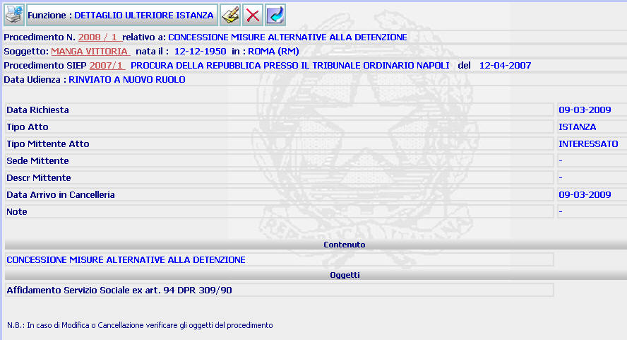

DETTAGLIO ULTERIORE ISTANZA: La funzione consente di visualizzare il dettaglio dell'ulteriore istanza inserita attraverso la funzione iscrizione ulteriore istanza.
LE MASCHERE VIDEO
La funzione in esame viene realizzata attraverso la maschera seguente

COME FARE PER ...
| Per visualizzare il dettaglio del procedimento Sius l'utente deve cliccare sul link relativo all'Anno/Numero del procedimento Sius evidenziato in rosso; |
| Per visualizzare il dettaglio del soggetto l'utente deve cliccare sul link relativo al cognome/nome del soggetto evidenziato in rosso; |
| Per modificare i dati dell'ulteriore
istanza l'utente deve cliccare sul
pulsante
|
| Per
cancellare l'ulteriore istanza
precedentemente inserita l'utente deve
cliccare sul pulsante
|
| Per tornare alla maschera precedente l'utente deve cliccare sul pulsante |
PULSANTI
Sono presenti i pulsanti
 ,
,
 ,
,
 , facenti parte del gruppo di
pulsanti di "Uso Comune"
, facenti parte del gruppo di
pulsanti di "Uso Comune"